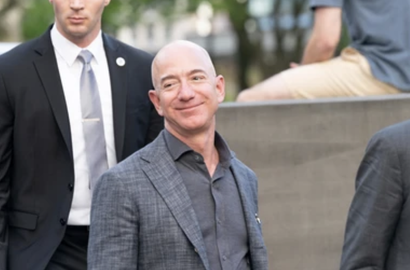
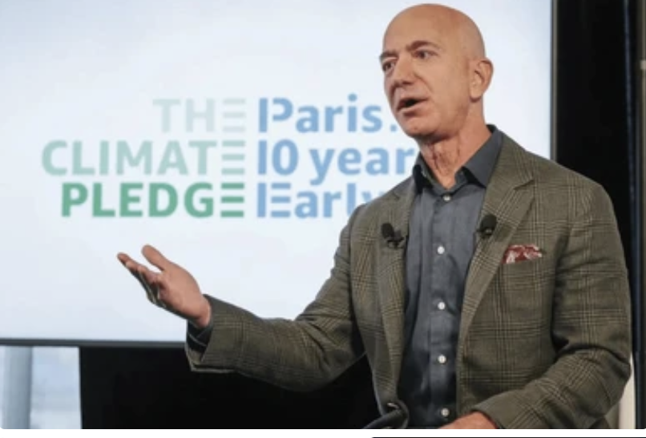
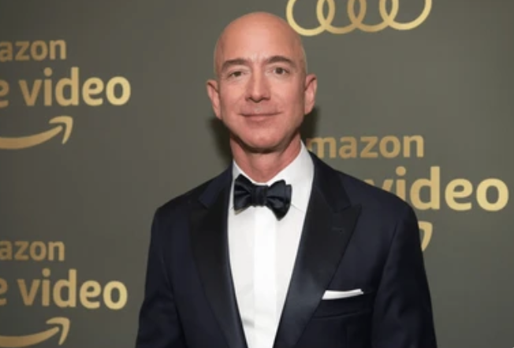

Jeff Bezos founded Amazon in late 1994 and was its CEO for more than 25 years, stepping down from this position on July 5, 2021. In 1997, when Amazon became a public company, Bezos’s net worth reached $120 million. Presently, Bezos is considered the second richest person in the world after Elon Musk: according to Celebrity Net Worth, his net worth amounts to $130 billion in 2022. Forbes notes that Bezos fell to No 2 for the first time in four years. He lost to Musk because of a 3% drop in Amazon stock and generous giving of $6 billion to various charitable causes. Bezos makes around $8.9 billion a month, meaning he earns $321 million daily. Bezos’s annual paycheck is $81,000. Amazon’s former CEO reached the record $200 billion net worth mark in August 2020. Bezos benefits from his Amazon stock holdings. Since the company went public in 1997, he has sold around $27 billion worth of Amazon stock. In 2010, Bezos sold 6,000,000 Amazon shares worth $793 million. Bezos invested $7.5 billion in Blue Origin, a private spaceflight company that sends people to space. In 2021, Bezos said that tourist sales to space reached $100 million worth of tickets. In 2013, Jeff Bezos purchased The Washington Post for $250 million because he believed that journalism is the main engine of democracy.
  